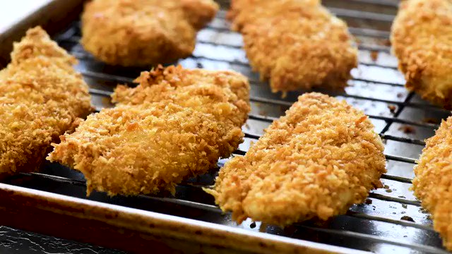

Chicken tendies

Description
Delicious and crispy fried chicken tenders that will melt in your mouth !
Ingredients (for 1 pers)
- 200g chicken breasts
- Some spices of your choice (paprika, oregano, pepper, salt etc.)
- 1 egg
- 10cl milk
- 100g flour
- 100g unsweetened cornflakes
- Some frying oil
- Mayonnaise, ketchup
Steps
- Start by cutting the chicken breasts into semi-fine strips.
- In a bowl, crack the egg, combine the milk and whisk.
- Put the cornflakes into a plastic bag and gently crack them with (something heavy enough to crush it) and put them in a bowl.
- In a separate bowl, combine the flour with the spices.
- Put the chicken into the flour first, then the egg mixture and the cornflakes. Repeat twice for extra crispiness.
- Once all of your chicken tendies are prepared, heat up a pot of oil on medium heat (just enough to cover the top of the semi-fine strips) to 170°C, if it's too hot reduce the heat.
- Cook the tendies until it is golden brown. This can take up from 7-15mn depending on the size of the pieces. Make sure to check and stir often so it doesn't end up burning / overcooking.
- Enjoy your tendies !